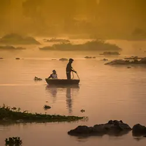
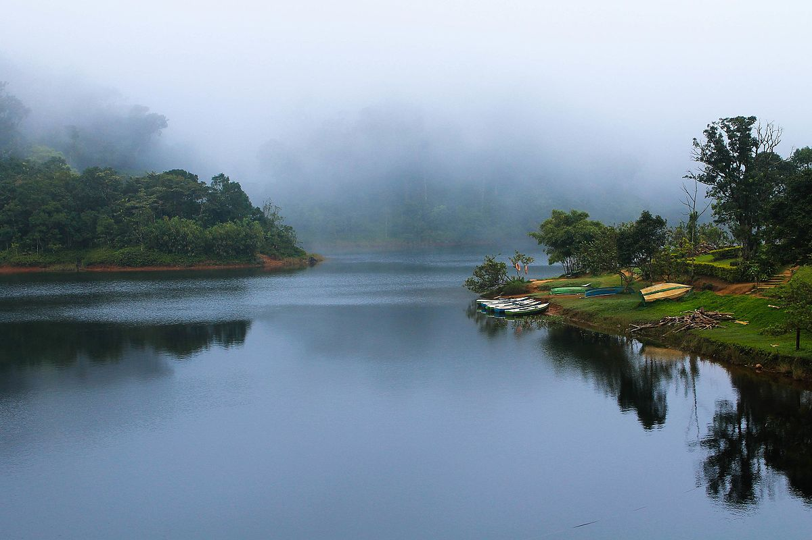

Pathanamthitta is a prominent tourist niche for its boat races, religious shrines and the cultural training centre. It is often called the ‘Pilgrim Capital of Kerala’. It houses Sabarimala, where the abode of Lord Ayappa is situated, where millions of devotees come every year from all over India. Moreover, this place has a rich tradition of art and culture. The rich art includes the famous ten-day-long ritualistic dance called Padayani. It is performed in Kadamanitta Devi Temple. Pathanamthitta is also famous for the Vasthuvidya Gurukulam that aims in preserving and promoting of Vasthuvidya and mural paintings. Another notable local art form is ‘Aranmula Kannadi’. It is the making of handmade metal-alloy mirror. The technique of making this mirror is kept as a family secret of the craftsmen and is handed over from generation to generation.
location
The Pandalam family was an off-shoot of the mighty Pandya dynasty, and in spite of being a small faction, commanded great wealth and respect in what is now modern Kerala, albeit thousands of years ago. The Pandalam Palace is maintained in their memory and contains mixed influences of Pandya and Malabar architecture. The Palace is considered the childhood home of Lord Ayyappa, and is one of the foremost Pathanamthitta tourist places.
location
Aranmula, a UN heritage site, is famous for two things - the boat race and the Aranmula Parthasarathy Temple. Then, you can also buy an Aranmula Kannadi, an intricately-designed metal mirror made using a secret method that’s been passed down from over generations.
location
Hindus believe that rivers originating from holy places have a cleansing effect, and a dip in one will erase all the sins in the past. Now, that depends on how much of a believer you are, but at Thriveni Sangamam, there’s one thing for sure - it’s one of the most breathtaking places to visit in Pathanamthitta. It is a confluence of three rivers - the Pamba River Manimala River and the Achankovil River, all deeply connected with Sabarimala.
location
Gavi is a carefully-protected natural reserve inhabited by some of the rarest and most elusive animals known to man. That’s why you have to be quiet, and carry your own litter when in Gavi. The local authorities, along with the villagers, go to great lengths to maintain this ecological vault of sorts. Gavi is a great place to go to trekking, but you have to be accompanied by forest officials wherever you go.
location
The Konni Forest reserves are a great place to spend a day with your family if you’re visiting Pathanamthitta, especially because it’s a very well-organised forest resort with excellent guides willing to take you around the place. If you can visit the elephant training centre where they break in wild elephants. Or, ride the bowl-shaped boats. Top tip- the bowl boats may get your head spinning, so better ride it on an empty stomach.